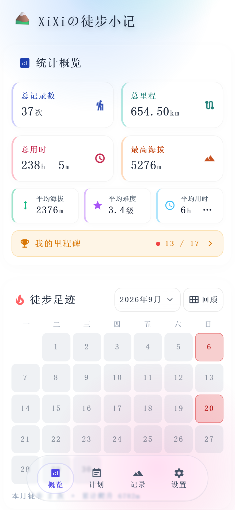
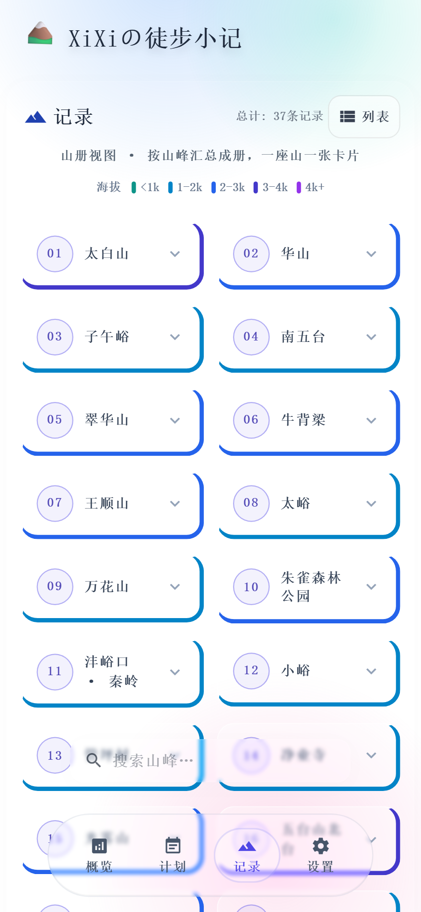
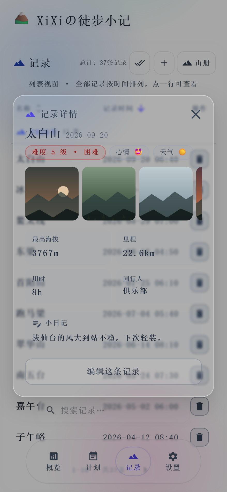
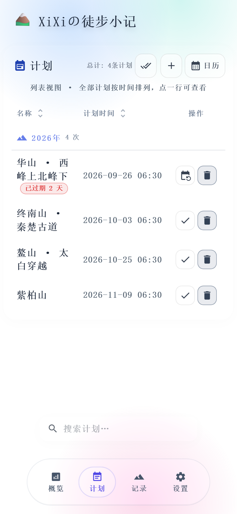
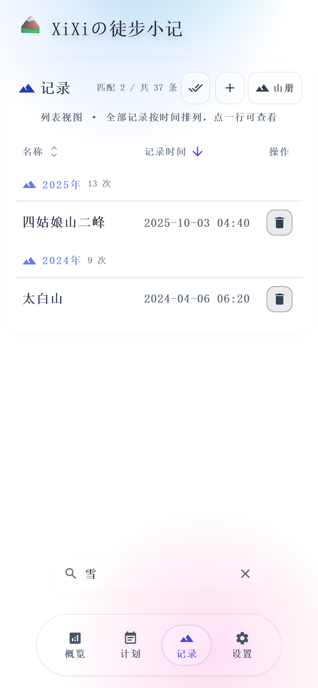

24 张 / 条
Per entry
下面每一屏都配 App 自己渲染出来的真机截图，不是设计稿，也不是照着做的复刻。 九节读完，装上之后是什么样子，你心里就有数了。
统计主卡、平均三项、我的里程碑、徒步足迹、年度回顾，还有往年今日。 所有数字只做加减法：不做评分，不做排行，也不告诉你「还不够努力」。

统计主卡把次数、里程、用时、最高海拔放在一起，旁边再补三格平均值； 「我的里程碑」把成就摆在一处，达成时放一屏彩屑；徒步足迹按月点亮， 点开就是那天的记录。年度回顾把今年和去年并排放，多了少了都只是事实，不带评判。
增删改都在一处；一套字段同时管登山和徒步 —— 难度 1–5、海拔、里程、用时、小日记、心情、天气、同行人、照片最多 24 张。 按年份分组，列表与山册双视图，点开一行就是详情，详情里能直接改。
不需要写得好看。累了就写一句小日记，收工再补细节。 没有模板，没有必填项：想只留一个日期和一个名字（山名、线路名都行），也完全没问题。

本地压缩后存进本机 IndexedDB，不上传、不识别、不做人脸归类。 详情页一排缩略图可左右滑，点开是全屏灯箱：双指放大到 3 倍、放大后拖动、双击还原。

照片是本地压缩后再存的，想存回相册也随时可以，全程不经过任何服务器。 山册里还会把同一个名字下的照片聚成一段「照片回忆」，隔几年翻出来看正好。
列表与日历双视图；过期、今天、明天三种徽章一眼分清。 到期的计划点「完成 / 延期」—— 完成就转成一条记录，延期就改个新日子。 计划当天早上 8:00 提醒一次，点通知直达计划页。

记录页与计划页各有一个搜索框。山名、小日记、心情、天气、同行人一起搜， 只记得半句话也能把那趟翻出来。索引始终在本机，不联网。

一键生成一张 1080 × 1440 的竖版卡，带海拔、里程、用时、心情、天气、同行人。 没有信息流，没有关注，没有点赞；不分享，也完全不影响。
导入 / 导出数据、完整备份 zip、WebDAV 云同步、自动同步、外观模式、 震动反馈、显示帧率、照片占用、抹掉足迹、检查更新、导出诊断。每一项都在明面上。
没有账号体系，也没有一台存着你记录的服务器。 同步只发生在你主动配置的坚果云 WebDAV 里，数据落到你自己的账号下； 自动保留两份历史，想回滚随时回滚。
记录只在本机，那守门的责任就在安装包本身。 从签名校验到文本进 DOM 前一律转义，五道都留着。
更新日志随包内置，断网也能翻。下面是最近两版。
介绍再多，
不如自己走一趟。